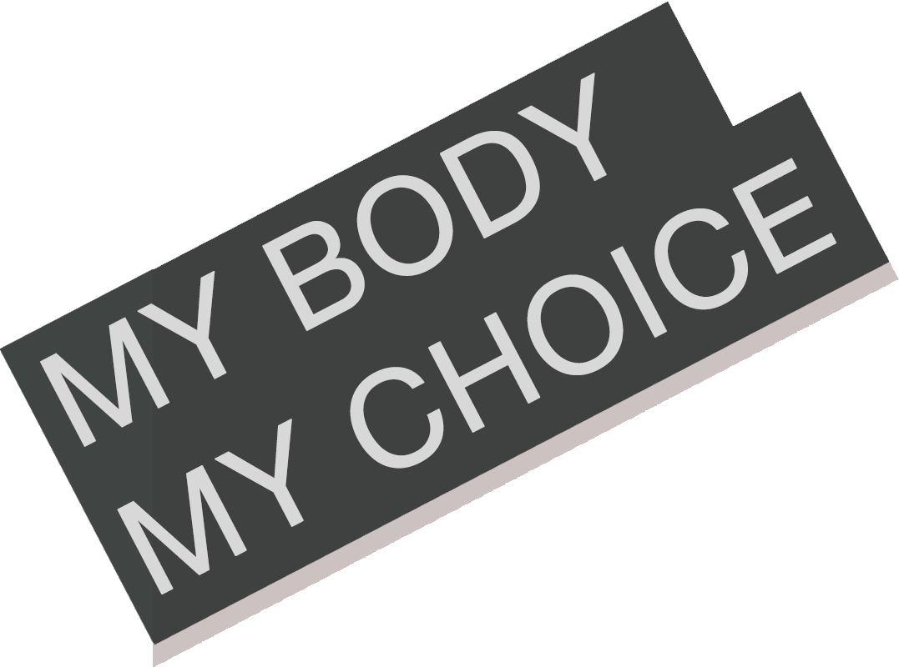

無關胖瘦
身材自由
無關胖瘦
身材自由
Eating Disorders (ED) are serious but treatable mental and physical illnesses that can affect people of all ages, genders, races, religions, ethnicities, body shapes and weights, which are more common among women with the incidence ten times higher than men. In women’s lifetime, the chance of getting Anorexia is about 4%; getting Bulimia or Binge eating disorder is around 2%.
While no one knows for sure what causes Eating Disorder, a growing consensus suggests that it is a range of genetics, brain biology, personality traits and sociocultural factors which encourages homogeneous and fixed judgement of aesthetical ideals in women’s body images.
Besides the three most common types of eating disorders mentioned above, less-known or less common eating disorders also exist, like Purging Disorder, Night Eating Syndrome and Other Specified Feeding or Eating Disorder (OSFED) which can’t found in the DSM-5 (American Psychiatric Association’s Diagnostic and Statistical Manual of Mental Disorders, fifth edition).
Anorexia nervosa patients may limit their food intake or compensate for it through various purging behaviors. They have an intense fear of gaining weight, even when severely underweight.
Bulimia nervosa patients eat large amounts of food in short periods of time, then purge. They fear gaining weight despite being at a normal weight.
Binge eating disorder patients regularly and uncontrollably consume large amounts of food in short periods of time. Unlike people with other eating disorders, they do not purge.
Body image issues are common problems in a society promoting unrealistic body ideals, it’s hard to resist temptations of comparing oneself to ideal standards. Hence many individuals experience dejection, anxiety, self-loathing and even end up developing Eating Disorders. Topics in Social Media, for instance, related to losing weight, can always intensify the ubiquitous stress.

/
我穿著宽鬆舒適的衣服，
就不是女人了嗎？
我穿著性感貼身的衣服，
就是蕩婦嗎？
你們從沒見過我的身體，
卻每天對它指指點點，
甚至延伸到我的人格。
為什麼？憑什麼？
我的身體什麼樣，
與你何干？
A: If you are now suffering ED or used to having ED, let’s hear about your stories, how you get it and what do you do to deal with it. Though it’s hard to recover from ED, it’s still treatable and there remains hope. Your stories may encourage other people with ED and at least let them know they are not alone. You’re not alone, too.
If you are healthy people, congratulations first, yet maybe you can still put up with some ideas on how to dismiss unhealthy aesthetical traditions in our society. Just feel free to contact us. We firmly believe that an accumulative impact of seas of small actions out of goodness will be totally out of our expectation.
Please tell us your stories related to ED. Let’s fight against monotonous definition and stereotypes of beauty together. Though not everything is faced can be changed, nothing can be changed until it is faced.
想跟正在/曾與ED掙扎的女孩說，
你不是怪物，跟自己和解吧，
希望你再也不要因為體重不快樂。